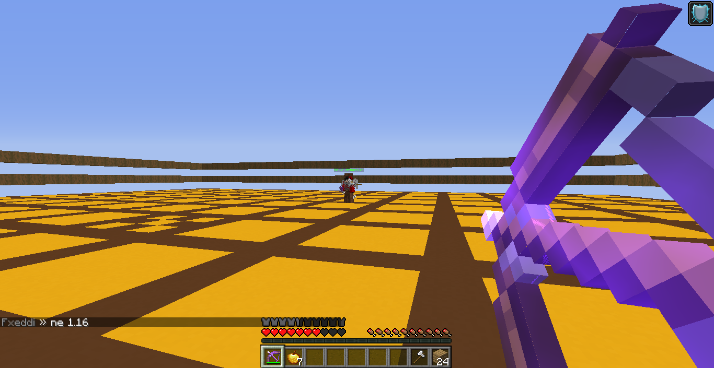
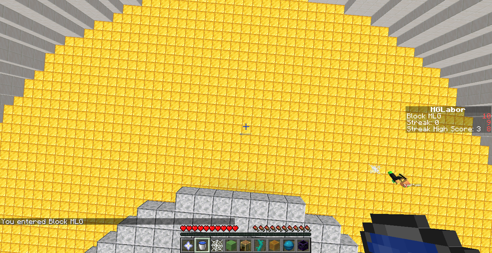
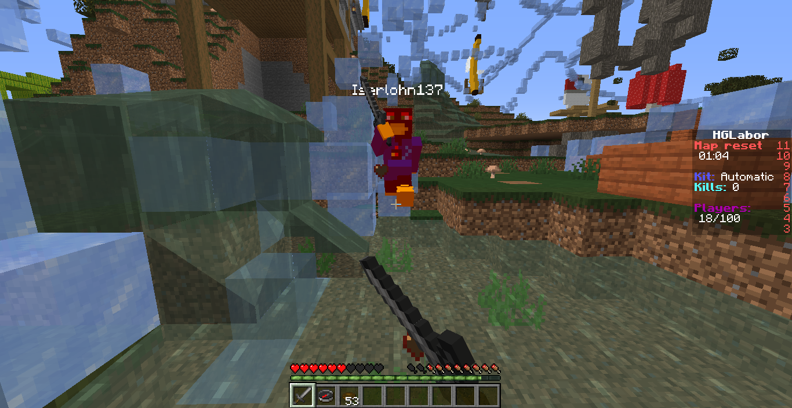
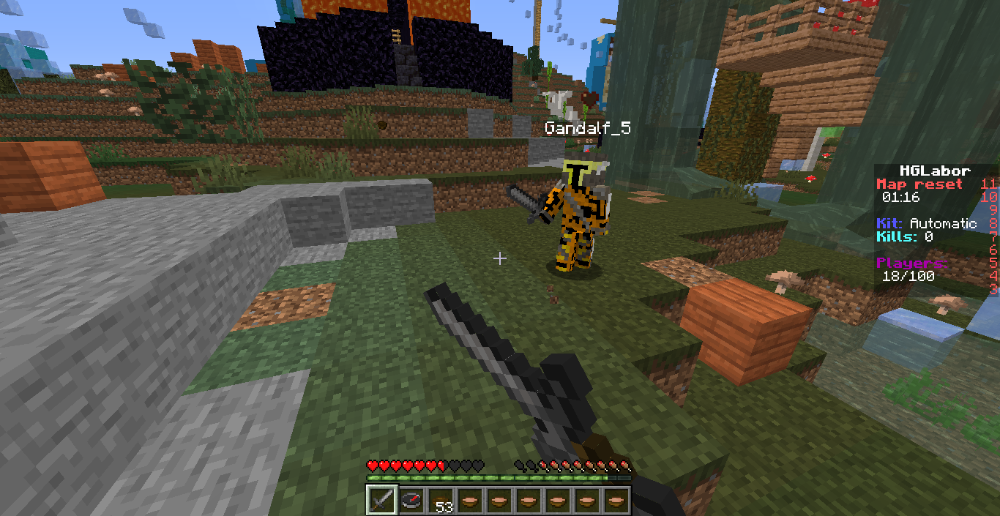

In HG solltest du dir nach Start der Runde Pilzsuppen und mind. ein Steinschwert ran hohlen nachdem die Schutzzeit vorbei ist wird gekämpft und der, der als letztes lebt hat gewonnen.
1vs1

In diesem Spiel Modus kannst du andere heraus fordern wenn sie die heraus forderung annehmen werden beide Spieler in eine Arena teleportiert und ihr müsst mit dem verschiedenem Equipment gegeneinander kämpfen. Außerdem gibt es noch PvP Bots gegen die man kämpfen kann.
Bingo
In diesem Modus geht es darum das du alleine oder auch im Team einige Items sammeln musst und der, der als erstes alle Items hat, hat gewonnen.
Challenge


In diesem Modus kannst du verschieden Damager meistern wie z.B den Noob Damager, den Impossible Damager, etc. außerdem kannst du auch MLG's machen z.B. Water MLG, Potion MLG, Slime Block MLG etc.
Survival
In diesem Modus kannst du alles machen du kannst Häuser bauen oder Equipment farmen und so weiter. Hier gibt es außerdem keine Regeln außer das man nett zu den anderen sein soll.
UHC
Seit neustem gibt es auch den Spiel Modus UHC dort geht es darum in einer Farming Phase so guten Stuff wie möglich zu bekommen und dann gegen andere Leute zu kämpfen während eine Border immer wieder kleiner wird und am Ende der letzte überlebende gewinnt.
Knockout
Dies ist der neuste Modus der aber noch in der Beta Phase ist hier geht es darum ein Partygame zu gewinnen hier gibt es auch modis wie One in the Chamber, Ampelrennen und noch vieles mehr.
Random World
In diesem Modus kann man sich random World generation angucken. Diese werden immer wieder mal resetet.
FFA


In diesem Modus musst du eines der vielen Kits auswählen und dann gegen andere Spieler kämpfen.